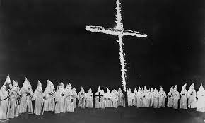

Esta parte se enfoca en el Ku Klux Klan, un grupo histórico conocido por sus actividades racistas y violentas en los Estados Unidos. La sección puede analizar su fundación, crecimiento, ideología y las implicaciones históricas de sus acciones.
El Ku Klux Klan (KKK) es una organización estadounidense fundada en 1865 después de la Guerra Civil. Originalmente, fue establecido para oprimir a los afroamericanos y a sus partidarios políticos en el sur de Estados Unidos. A lo largo de su historia, el KKK ha perpetrado numerosos actos de violencia, incluyendo linchamientos, palizas y atentados, con el objetivo de mantener la supremacía blanca y resistir los avances en los derechos civiles.
A pesar de enfrentar períodos de declive y represión, el KKK ha persistido en diversas formas y ha sido objeto de condena por su odio racial y actividades violentas. A lo largo del tiempo, la organización ha evolucionado y ha surgido en diferentes momentos de tensión racial en la historia de Estados Unidos. Aunque ha perdido gran parte de su poder y cohesión, siguen existiendo pequeños grupos que se autodenominan "Ku Klux Klan", aunque no están unificados bajo una sola estructura organizativa, y su influencia es significativamente menor en comparación con su auge en el pasado.